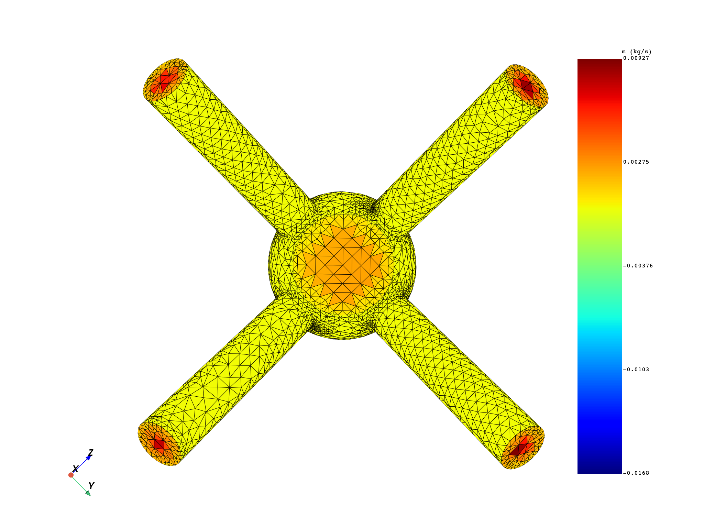

Note
Click here to download the full example code
Explore Fluids results#
Note
This example requires DPF 7.0 (ansys-dpf-server-2024-1-pre0) or above. For more information, see Compatibility.
Exploring Ansys Fluent results#
This example demonstrates how you can explore Ansys Fluent results. Import
the result file and explore the available results with the ResultInfo .
import ansys.dpf.core as dpf
from ansys.dpf.core import examples
from ansys.dpf.core.plotter import DpfPlotter
paths = examples.download_fluent_multi_phase()
ds = dpf.DataSources()
ds.set_result_file_path(paths["cas"], "cas")
ds.add_file_path(paths["dat"], "dat")
streams = dpf.operators.metadata.streams_provider(data_sources=ds)
rinfo = dpf.operators.metadata.result_info_provider(streams_container=streams).eval()
print(rinfo)
Static analysis
Unit system: SI: m, kg, N, s, V, A, K
Physics Type: Fluid
Available results:
- epsilon: ElementalAndFaces Epsilon
- enthalpy: ElementalAndFaces Enthalpy
- turbulent_kinetic_energy: ElementalAndFaces Turbulent Kinetic Energy
- mach_number: Faces Mach Number
- mass_flow_rate: Faces Mass Flow Rate
- dynamic_viscosity: Elemental Dynamic Viscosity
- turbulent_viscosity: Elemental Turbulent Viscosity
- static_pressure: ElementalAndFaces Static Pressure
- surface_heat_rate: Faces Surface Heat Rate
- density: ElementalAndFaces Density
- temperature: ElementalAndFaces Temperature
- velocity: ElementalAndFaces Velocity
- volume_fraction: ElementalAndFaces Volume Fraction
- y_plus: Faces Y Plus
Available qualifier labels:
- zone: interior-2 (2), inlet1 (3), out1 (4), out2 (5), out3 (6), out4 (7), out5 (8), wall (9), fluid-1 (1)
- phase: phase-1 (1), phase-2 (2), phase-3 (3)
Explore elemental (cell) results#
Dynamic viscosity is a result naturally exported to the centroids of the
elements in this Fluent model. In addition, it is available for zone 1
but for all phases. If no region_scoping is connected to the results extraction
operator, the result is extracted for all cell zones and exported to an
Elemental Field. Elemental results do not bring their MeshSupport by
default, and thus the mesh input can be employed to connect the MeshedRegion
and display the result.
print(rinfo.available_results[5])
whole_mesh = dpf.operators.mesh.mesh_provider(streams_container=streams).eval()
mu = dpf.operators.result.dynamic_viscosity(streams_container=streams, mesh=whole_mesh).eval()
print(mu)
print(mu[0])
pl = DpfPlotter()
pl.add_field(mu[0])
cpos = [
(-0.17022616684387018, -0.20190398787025482, 0.1948471407823707),
(0.00670901800318915, 0.00674082901283412, 0.0125629516499091),
(-0.84269816220442720, 0.39520703007216523, -0.3656107367116286),
]
pl.show_figure(cpos=cpos, show_axes=True)
DPF Result
----------
dynamic_viscosity
Operator name: "MU"
Number of components: 1
Dimensionality: scalar
Homogeneity: dynamic_viscosity
Units: pa*s
Location: Elemental
Available qualifier labels:
- phase: phase-1 (1), phase-2 (2), phase-3 (3)
- zone: fluid-1 (1)
Available qualifier combinations:
{'phase': 1, 'zone': 1}
{'phase': 2, 'zone': 1}
{'phase': 3, 'zone': 1}
DPF Fields Container
with 3 field(s)
defined on labels: phase time
with:
- field 0 {phase: 1, time: 1} with Elemental location, 1 components and 46065 entities.
- field 1 {phase: 2, time: 1} with Elemental location, 1 components and 46065 entities.
- field 2 {phase: 3, time: 1} with Elemental location, 1 components and 46065 entities.
DPF mu_phase-1 Field
Location: Elemental
Unit: Pa*s
46065 entities
Data: 1 components and 46065 elementary data
Elemental
IDs data(Pa*s)
------------ ----------
1 9.820234e-04
2 9.820714e-04
3 9.820128e-04
...
The result extraction can be tailored to a specific subset of cells employing the mesh_scoping pin and connecting an Elemental Scoping. Similarly, a nodal Scoping can be connected to reconstruct the results to the nodes. The nodal reconstruction algorithm is based on Frink’s Laplacian method, and is outlined in the Technical Report AIAA-94-0061, “Recent Progress Toward a Three-Dimensional Unstructured Navier-Stokes Flow Solver”. In this sense, Elemental and Nodal results can be compared.
def displace_mesh(original_mesh: dpf.MeshedRegion, disp: list) -> dpf.MeshedRegion:
new_mesh = original_mesh.deep_copy()
overall_field = dpf.fields_factory.create_3d_vector_field(1, dpf.locations.overall)
overall_field.append(disp, 1)
coordinates_to_update = new_mesh.nodes.coordinates_field
add_operator = dpf.operators.math.add(coordinates_to_update, overall_field)
coordinates_updated = add_operator.outputs.field()
coordinates_to_update.data = coordinates_updated.data
return new_mesh
mu_n = dpf.operators.result.dynamic_viscosity(
streams_container=streams, mesh_scoping=whole_mesh.nodes.scoping
).eval()
print(mu_n)
print(mu_n[0])
pl = DpfPlotter()
pl.add_field(mu[0], mu[0].meshed_region)
mesh_2 = displace_mesh(mu_n[0].meshed_region, [0.0, 0.0, 0.1])
pl.add_field(mu_n[0], mesh_2)
cpos = [
(-0.0974229481282998, -0.3354131926802486, 0.02364170067607966),
(0.0046509680168551, -0.0052570762141029, 0.07279504113027249),
(-0.9556918746374846, 0.2942559170175542, 0.00815451114712985),
]
pl.show_figure(cpos=cpos, show_axes=True, window_size=[1024 * 2, 768 * 2])
DPF Fields Container
with 3 field(s)
defined on labels: phase time
with:
- field 0 {phase: 1, time: 1} with Nodal location, 1 components and 9884 entities.
- field 1 {phase: 2, time: 1} with Nodal location, 1 components and 9884 entities.
- field 2 {phase: 3, time: 1} with Nodal location, 1 components and 9884 entities.
DPF mu_phase-1 Field
Location: Nodal
Unit: Pa*s
9884 entities
Data: 1 components and 9884 elementary data
Nodal
IDs data(Pa*s)
------------ ----------
1 9.826043e-04
2 9.823396e-04
3 9.824182e-04
...
The result extraction can also be tailored to a specific set of phases, zones and species employing the qualifiers ellipsis pins and connecting a LabelSpace. Each pin in the qualifiers ellipsis (1000, 1001, …) allows you to connect a LabelSpace with the desired IDs in “zone”, “phase” and/or “species”. In this particular example, only “phase” is applicable.
mu_p2_prov = dpf.operators.result.dynamic_viscosity(streams_container=streams)
mu_p2_prov.connect(1000, {"phase": 2})
mu_p2 = mu_p2_prov.eval()
print(mu_p2)
DPF Fields Container
with 1 field(s)
defined on labels: phase time zone
with:
- field 0 {phase: 2, time: 1, zone: 1} with Elemental location, 1 components and 46065 entities.
Explore face results#
Mass Flow rate is a result naturally exported to the centroids of the
faces in this Fluent model. It is available for several face zones. If no
region_scoping is connected to the results extraction operator, the result is
extracted for all face zones (excluding interior zones), and exported to a
Faces Field. Face results defined on all face zones bring their
MeshSupport by default.
print(rinfo.available_results[4])
mdot = dpf.operators.result.mass_flow_rate(streams_container=streams).eval()
print(mdot)
print(mdot[0])
print(mdot[0].meshed_region)
pl = DpfPlotter()
pl.add_field(mdot[0], mdot[0].meshed_region)
cpos = [
(0.33174794676955766, -0.0004666003573986906, -0.003683572358464899),
(0.00308308291385862, 0.0018660501219530234, 0.002657631405566274),
(0.00837023599064669, -0.7165991168396113000, 0.697435047079045400),
]
pl.show_figure(cpos=cpos, show_axes=True)
pl = DpfPlotter()
pl.add_field(mdot[0], mdot[0].meshed_region)
cpos = [
(-0.22143903910901550, -0.0048827077124325, 0.0037923111967477),
(0.00300595909357079, -2.622604370117e-06, 7.033083496094e-06),
(-0.02716069471785041, 0.6830445754068439, -0.7298714987377765),
]
pl.show_figure(cpos=cpos, show_axes=True)
- 
DPF Result
----------
mass_flow_rate
Operator name: "MDOT"
Number of components: 1
Dimensionality: scalar
Homogeneity: mass_flow_rate
Units: kg/s
Location: Faces
Available qualifier labels:
- phase: phase-1 (1), phase-2 (2), phase-3 (3)
- zone: inlet1 (3), out1 (4), out2 (5), out3 (6), out4 (7), out5 (8), wall (9)
Available qualifier combinations:
{'phase': 1, 'zone': 3}
{'phase': 1, 'zone': 4}
{'phase': 1, 'zone': 5}
{'phase': 1, 'zone': 6}
{'phase': 1, 'zone': 7}
{'phase': 1, 'zone': 8}
{'phase': 1, 'zone': 9}
{'phase': 2, 'zone': 3}
{'phase': 2, 'zone': 4}
{'phase': 2, 'zone': 5}
{'phase': 2, 'zone': 6}
{'phase': 2, 'zone': 7}
{'phase': 2, 'zone': 8}
{'phase': 2, 'zone': 9}
{'phase': 3, 'zone': 3}
{'phase': 3, 'zone': 4}
{'phase': 3, 'zone': 5}
{'phase': 3, 'zone': 6}
{'phase': 3, 'zone': 7}
{'phase': 3, 'zone': 8}
{'phase': 3, 'zone': 9}
DPF Fields Container
with 3 field(s)
defined on labels: phase time
with:
- field 0 {phase: 1, time: 1} with Faces location, 1 components and 7515 entities.
- field 1 {phase: 2, time: 1} with Faces location, 1 components and 7515 entities.
- field 2 {phase: 3, time: 1} with Faces location, 1 components and 7515 entities.
DPF m_dot_phase-1 Field
Location: Faces
Unit: kg/s
7515 entities
Data: 1 components and 7515 elementary data
Faces
IDs data(kg/s)
------------ ----------
88507 -1.055074e-02
88508 -6.505934e-03
88509 -5.188158e-03
...
DPF Meshed Region:
3770 nodes
7515 faces
Unit: m
As this result is defined for several zones, the region_scoping pin can be used
to extract a subset of them. We can get for example the mass flow rate for all
inlets and outlets of the model. Face results defined on individual zones need
the connection of the mesh pin to retrieve their right mesh_support. In particular,
the connected entity should be a MeshesContainer labelled on zone. This is the
output from the meshes_provider operator, as seen in Explore Fluids mesh .
in_sco = dpf.Scoping(ids=[3], location=dpf.locations.zone)
in_meshes = dpf.operators.mesh.meshes_provider(
streams_container=streams, region_scoping=in_sco
).eval()
mdot_in = dpf.operators.result.mass_flow_rate(
streams_container=streams, region_scoping=in_sco, mesh=in_meshes
).eval()
print(mdot_in)
out_sco = dpf.Scoping(ids=[4, 5, 6, 7], location=dpf.locations.zone)
out_meshes = dpf.operators.mesh.meshes_provider(
streams_container=streams, region_scoping=out_sco
).eval()
mdot_out = dpf.operators.result.mass_flow_rate(
streams_container=streams, region_scoping=out_sco, mesh=out_meshes
).eval()
print(mdot_out)
pl = DpfPlotter()
pl.add_field(mdot_in[0], mdot_in[0].meshed_region)
pl.add_field(mdot_out[0], mdot_out[0].meshed_region)
pl.add_field(mdot_out[3], mdot_out[3].meshed_region)
pl.add_field(mdot_out[6], mdot_out[6].meshed_region)
pl.add_field(mdot_out[9], mdot_out[9].meshed_region)
pl.show_figure(cpos=cpos, show_axes=True)
DPF Fields Container
with 3 field(s)
defined on labels: phase time zone
with:
- field 0 {phase: 1, time: 1, zone: 3} with Faces location, 1 components and 244 entities.
- field 1 {phase: 2, time: 1, zone: 3} with Faces location, 1 components and 244 entities.
- field 2 {phase: 3, time: 1, zone: 3} with Faces location, 1 components and 244 entities.
DPF Fields Container
with 12 field(s)
defined on labels: phase time zone
with:
- field 0 {phase: 1, time: 1, zone: 4} with Faces location, 1 components and 92 entities.
- field 1 {phase: 2, time: 1, zone: 4} with Faces location, 1 components and 92 entities.
- field 2 {phase: 3, time: 1, zone: 4} with Faces location, 1 components and 92 entities.
- field 3 {phase: 1, time: 1, zone: 5} with Faces location, 1 components and 100 entities.
- field 4 {phase: 2, time: 1, zone: 5} with Faces location, 1 components and 100 entities.
- field 5 {phase: 3, time: 1, zone: 5} with Faces location, 1 components and 100 entities.
- field 6 {phase: 1, time: 1, zone: 6} with Faces location, 1 components and 88 entities.
- field 7 {phase: 2, time: 1, zone: 6} with Faces location, 1 components and 88 entities.
- field 8 {phase: 3, time: 1, zone: 6} with Faces location, 1 components and 88 entities.
- field 9 {phase: 1, time: 1, zone: 7} with Faces location, 1 components and 101 entities.
- field 10 {phase: 2, time: 1, zone: 7} with Faces location, 1 components and 101 entities.
- field 11 {phase: 3, time: 1, zone: 7} with Faces location, 1 components and 101 entities.
To filter a particular phase for a certain selection of zones, the qualifiers pin can be used.
mdot_out_prov = dpf.operators.result.mass_flow_rate(streams_container=streams, mesh=in_meshes)
mdot_out_prov.connect(1000, {"zone": 4, "phase": 2})
mdot_out_prov.connect(1001, {"zone": 5, "phase": 2})
mdot_out_prov.connect(1002, {"zone": 6, "phase": 2})
mdot_out_prov.connect(1003, {"zone": 7, "phase": 2})
mdot_out_2 = mdot_out_prov.eval()
print(mdot_out_2)
DPF Fields Container
with 4 field(s)
defined on labels: phase time zone
with:
- field 0 {phase: 2, time: 1, zone: 4} with Faces location, 1 components and 92 entities.
- field 1 {phase: 2, time: 1, zone: 5} with Faces location, 1 components and 100 entities.
- field 2 {phase: 2, time: 1, zone: 6} with Faces location, 1 components and 88 entities.
- field 3 {phase: 2, time: 1, zone: 7} with Faces location, 1 components and 101 entities.
Explore ElementalAndFaces results#
ElementalAndFaces results are the ones that are exported to both the centroids
of the elements and the faces. The same extraction possibilities discussed in
the previous sections are applicable to these results. For example, Velocity
is available for several cell and face zones. If no region_scoping is connected
to the results extraction operator, the result is extracted for all cell zones,
and exported to an Elemental Field (thus, the behavior for Elemental results
is replicated). ElementalAndFaces results do not bring their MeshSupport by
default, and thus the mesh input can be employed to connect the MeshedRegion
and display the result.
print(rinfo.available_results[11])
v = dpf.operators.result.velocity(streams_container=streams, mesh=whole_mesh).eval()
print(v)
print(v[0])
pl = DpfPlotter()
pl.add_field(v[0])
cpos = [
(-0.17022616684387018, -0.20190398787025482, 0.1948471407823707),
(0.00670901800318915, 0.00674082901283412, 0.0125629516499091),
(-0.84269816220442720, 0.39520703007216523, -0.3656107367116286),
]
pl.show_figure(cpos=cpos, show_axes=True)
DPF Result
----------
velocity
Operator name: "V"
Number of components: 3
Dimensionality: vector
Homogeneity: velocity
Units: m/s
Location: ElementalAndFaces
Available qualifier labels:
- phase: phase-1 (1), phase-2 (2), phase-3 (3)
- zone: fluid-1 (1), inlet1 (3), out1 (4), out2 (5), out3 (6), out4 (7), out5 (8), wall (9)
Available qualifier combinations:
{'phase': 1, 'zone': 1}
{'phase': 1, 'zone': 3}
{'phase': 1, 'zone': 4}
{'phase': 1, 'zone': 5}
{'phase': 1, 'zone': 6}
{'phase': 1, 'zone': 7}
{'phase': 1, 'zone': 8}
{'phase': 1, 'zone': 9}
{'phase': 2, 'zone': 1}
{'phase': 2, 'zone': 3}
{'phase': 2, 'zone': 4}
{'phase': 2, 'zone': 5}
{'phase': 2, 'zone': 6}
{'phase': 2, 'zone': 7}
{'phase': 2, 'zone': 8}
{'phase': 2, 'zone': 9}
{'phase': 3, 'zone': 1}
{'phase': 3, 'zone': 3}
{'phase': 3, 'zone': 4}
{'phase': 3, 'zone': 5}
{'phase': 3, 'zone': 6}
{'phase': 3, 'zone': 7}
{'phase': 3, 'zone': 8}
{'phase': 3, 'zone': 9}
DPF Fields Container
with 3 field(s)
defined on labels: phase time
with:
- field 0 {phase: 1, time: 1} with Elemental location, 3 components and 46065 entities.
- field 1 {phase: 2, time: 1} with Elemental location, 3 components and 46065 entities.
- field 2 {phase: 3, time: 1} with Elemental location, 3 components and 46065 entities.
DPF v_phase-1 Field
Location: Elemental
Unit: m/s
46065 entities
Data: 3 components and 46065 elementary data
Elemental
IDs data(m/s)
------------ ----------
1 7.683455e-01 2.442937e-02 4.803457e-01
2 -1.298090e-01 -6.554842e-01 -7.766054e-02
3 1.233373e+00 -1.081378e-01 5.288749e-02
...
Building upon the concepts from the previous sections, the several velocity Fields will be extracted and compared.
# Velocity field for all cells and phase 1
v_prov = dpf.operators.result.velocity(streams_container=streams, mesh=whole_mesh)
v_e_1 = v_prov.eval()[0]
print(v_e_1)
# Velocity field for all nodes and phase 1, reconstructed from Elemental values
v_prov = dpf.operators.result.velocity(
streams_container=streams, mesh_scoping=whole_mesh.nodes.scoping
)
v_prov.connect(1000, {"phase": 1})
v_n_1 = v_prov.eval()[0]
print(v_n_1)
# Velocity field for all faces in the wall zone and phase 1
mesh_9 = dpf.operators.mesh.meshes_provider(streams_container=streams, region_scoping=9).eval()
v_prov = dpf.operators.result.velocity(streams_container=streams, mesh=mesh_9)
v_prov.connect(1000, {"zone": 9, "phase": 1})
v_f_1 = v_prov.eval()[0]
print(v_f_1)
# Velocity field for all nodes in the wall zone, reconstructed from Faces values
nodes_9 = dpf.ScopingsContainer()
nodes_9.labels = ["zone"]
nodes_9.add_scoping({"zone": 9}, mesh_9[0].nodes.scoping)
v_prov = dpf.operators.result.velocity(streams_container=streams, mesh=mesh_9, mesh_scoping=nodes_9)
v_prov.connect(1000, {"zone": 9, "phase": 1})
v_fn_1 = v_prov.eval()[0]
print(v_fn_1)
pl = DpfPlotter()
pl.add_field(v_e_1, v_e_1.meshed_region)
pl.add_field(v_n_1, displace_mesh(v_n_1.meshed_region, [0.0, 0.1, 0.1]))
pl.add_field(v_f_1, displace_mesh(v_f_1.meshed_region, [0.14, 0.0, 0.0]))
pl.add_field(v_fn_1, displace_mesh(v_fn_1.meshed_region, [0.14, 0.1, 0.1]))
cpos = [
(-0.21475742417583732, -0.34217954990512434, 0.37813091968727935),
(0.07300595909357072, 0.049997377395629886, 0.0500070333480835),
(-0.871295572277007, 0.36296433899936376, -0.3303042753965463),
]
pl.show_figure(cpos=cpos, show_axes=True, window_size=[1024 * 2, 768 * 2])
DPF v_phase-1 Field
Location: Elemental
Unit: m/s
46065 entities
Data: 3 components and 46065 elementary data
Elemental
IDs data(m/s)
------------ ----------
1 7.683455e-01 2.442937e-02 4.803457e-01
2 -1.298090e-01 -6.554842e-01 -7.766054e-02
3 1.233373e+00 -1.081378e-01 5.288749e-02
...
DPF v_phase-1 Field
Location: Nodal
Unit: m/s
9884 entities
Data: 3 components and 9884 elementary data
Nodal
IDs data(m/s)
------------ ----------
1 9.242036e-01 7.270190e-03 -9.441107e-01
2 8.935150e-01 1.174454e-02 -9.015442e-01
3 8.902260e-01 -1.373017e-03 -9.067315e-01
...
DPF v_phase-1 Field
Location: Faces
Unit: m/s
6661 entities
Data: 3 components and 6661 elementary data
Faces
IDs data(m/s)
------------ ----------
89361 7.071549e-01 2.443295e-03 -6.818115e-01
89362 7.302050e-01 -6.993529e-03 -7.048932e-01
89363 7.208678e-01 -9.366445e-03 -7.038194e-01
...
DPF v_phase-1 Field
Location: Nodal
Unit: m/s
3447 entities
Data: 3 components and 3447 elementary data
Nodal
IDs data(m/s)
------------ ----------
3 7.286528e-01 -1.430611e-02 -7.451506e-01
6 7.460110e-01 2.864507e-03 -7.754091e-01
7 6.657897e-01 -5.586134e-03 -7.010177e-01
...
As observed, the reconstructed velocities at the nodes are different when cell centroidal and face centroidal values were used to average them.
Total running time of the script: ( 0 minutes 19.404 seconds)